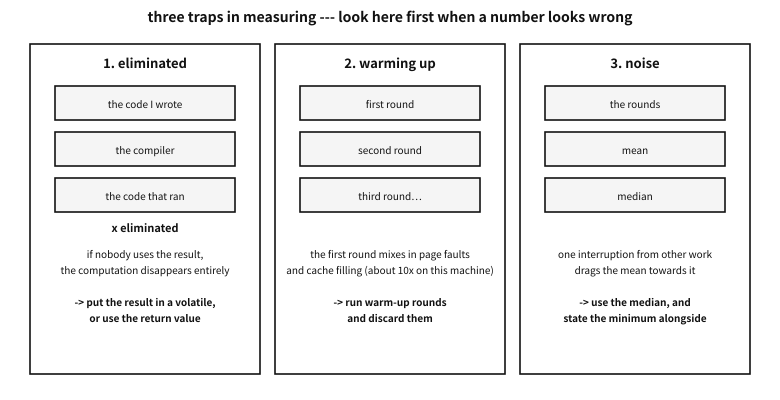
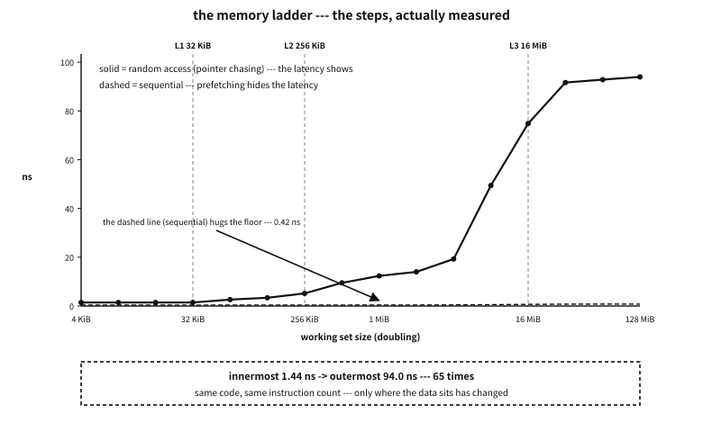
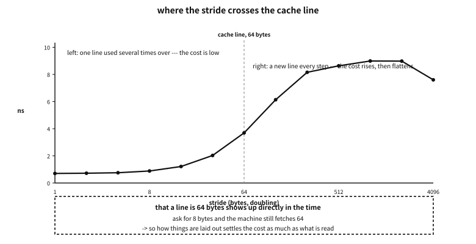
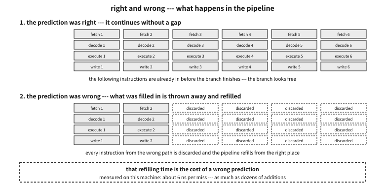
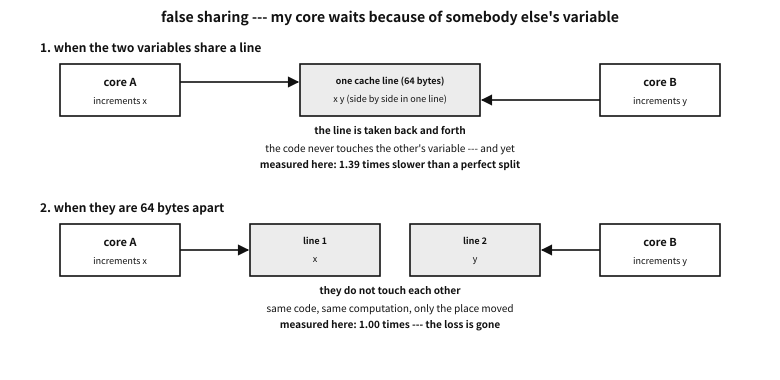

Appendix M — The machine, measured: caches, branches and cores in numbers
Chapter 12 taught that memory is a ladder: registers fastest, then the caches, main memory slow, disks very slow. chapter 13 showed pipelines and branch prediction.
All true. But how fast and how slow? “It is fast if it fits in cache” could mean a hundredfold or it could mean 1.2 times. That difference changes designs.
This appendix puts numbers on what those two chapters said in words. And one thing more — it teaches how to measure. A number measured wrongly is worse than no number.
★ One question for a first reading: How many times apart are the costs of cache levels, branch prediction and false sharing in practice, and how do you measure them without fooling yourself? (The individual nanosecond figures are not for memorising.)
Platform note. the character of this appendix
The earlier appendices dealt with structure (what is written where, and how). So building the bytes and reading them back finished the verification. This one deals with cost. Verification here means measuring, and what is measured differs by machine. So one more discipline attaches — absolute times carefully, ratios confidently. The nanoseconds measured on this machine will differ elsewhere, but the relation “L1 is tens of times faster than main memory” remains.
The machine’s model name is not recorded. What is needed is not a name but numbers, and the examples read those numbers themselves — so run elsewhere, they give that machine’s answer.
The machine measured is one x86-64 Linux machine. The examples were also cross-compiled for aarch64 (GCC 16.1) and run to the end under an emulator (qemu user mode) — they build without warnings and run to completion. But time measured inside an emulator is not ARM’s time, so none of it is printed here. Numbers from real ARM hardware were measured separately on an Android phone (the section “Measured again on real ARM hardware”). What the emulator run found was not a number but a defect (the box in section 1 below).
Why measure — with concepts alone, what remains is wrong intuition#
Compare three sentences. All three are commonly said, and all three are “broadly true”.
- “It is fast if it fits in cache.”
- “Branches are expensive.”
- “More threads make it faster.”
No decision can be made from these. Whether to size an array at 4 MiB or 400 KiB, how much effort to spend removing a conditional, whether two threads may touch the same struct — every one of those needs a number.
Filling in those numbers is what this appendix is for. But before numbers, look at the instrument that measures them.
Measure the measuring instrument first#
The first thing people do when writing measurement code is read a clock. And reading a clock has a cost. If what you are measuring is shorter than that cost, what you are measuring is the clock.
| Name | What it counts | Can it go backwards | What it is for |
|---|---|---|---|
clock() | CPU time used by the program (roughly) | no | very coarse estimates |
time() | seconds since 1970 | yes — if the time is adjusted | dates and times |
CLOCK_REALTIME | wall-clock time, to the nanosecond | yes — it jumps when NTP corrects it | records and logs |
CLOCK_MONOTONIC | time since some fixed point | no — never backwards | timing |
CLOCK_PROCESS_CPUTIME_ID | CPU time this process used | no | how much CPU was used |
Table 121.1 — The clocks met in C and POSIX
★ The fourth row is the clock this appendix uses. The reason not to use the wall clock is simple — if time synchronisation happens mid-measurement you get a negative duration. Half the bug reports saying “sometimes it prints −3 ms” are this.

Figure 121.1 — Three traps in measuring, and the guard against each.
examples-en/apx-measured/clock_probe/clock_probe.c (excerpt)
static void sum_discarded(const int *a, size_t n)
{
long s = 0;
for (size_t i = 0; i < n; i++) s += a[i];
(void)s;
}
/* … */
static long sum_kept(const int *a, size_t n)
{
long s = 0;
for (size_t i = 0; i < n; i++) s += a[i];
return s;
}
/* … */
const long N = 200000;
double t0 = ns();
for (long i = 0; i < N; i++) { struct timespec ts; clock_gettime(CLOCK_MONOTONIC, &ts); sink += ts.tv_nsec; }
double t1 = ns();
double call_ns = (t1 - t0) / (double)N;
/* … */
t0 = ns(); memset(b, 1, NA * sizeof *b); t1 = ns();
double first = t1 - t0; sink += ((unsigned char *)b)[NA / 2];
t0 = ns(); memset(b, 2, NA * sizeof *b); t1 = ns();
double second = t1 - t0; sink += ((unsigned char *)b)[NA / 2];Output
== 1. this machine's numbers (the example reads them itself) ==
L1 data cache
size : 32768 bytes (32 KiB)
line size : 64 bytes
associativity: 8-way
L2 cache : 256 KiB
L3 cache : 16384 KiB (16 MiB)
page size : 4096 bytes
logical cores : 16
== 2. clock resolution --- how finely can it be seen ==
CLOCK_MONOTONIC (never goes backwards) resolution 1 ns
CLOCK_REALTIME (wall clock --- it jumps when adjusted) resolution 1 ns
CLOCK_PROCESS_CPUTIME_ID (CPU time I used) resolution 1 ns
* a resolution of 1 ns does not mean 1 ns can be measured.
Reading the clock costs more than that --- measured next.
== 3. the cost of reading the clock ==
one clock_gettime : 16.8 ns
smallest interval actually distinguishable : 17.0 ns
* so anything shorter than this is never measured once. Repeat and divide.
Every measurement in this appendix is built that way.
== 4. trap one: the optimiser removes what you meant to measure ==
a sum whose result is discarded : 4 ns (0.00 ns per element)
a sum whose result is used : 238855 ns (0.23 ns per element)
factor : 54909.1 x
* if the first is near zero, that code never ran. The compiler removed it as
a value nobody uses. When the result says your code is infinitely fast,
suspect this before suspecting the machine.
== 5. trap two: the first round is slow (warming up) ==
filling the same 4 MiB --- first : 1430763 ns
second : 127263 ns
factor: 11.2 x
* the first round mixes in the cost of the OS attaching pages one by one (page faults).
So warm up before measuring, and discard the warm-up rounds.
== 6. trap three: one interruption drags the mean ==
results over 201 rounds
minimum 12554 ns
median 12727 ns <- what this appendix uses
mean 13104 ns
99th percentile 23487 ns
maximum 29370 ns
mean / median = 1.03 x (the further from 1, the more other work interfered)
* this machine is shared. So the median is used rather than the mean, with the
minimum alongside to show what it would be with no interference.
The demonstration comes in six pieces. One at a time.
1. The example reads the machine’s numbers itself#
sysconf is asked for the cache sizes, line size, page size and core count. The later demonstrations use those as the baseline — so instead of “past 32 KiB it slows down” we can say “past the L1 size it slows down”.
Platform note. aarch64’s C library does not know the cache sizes
The cache values from sysconf are filled in by the C library asking the CPU. glibc on x86-64 answers with CPUID. glibc on aarch64 answers only the line size, from the CTR_EL0 register — and that is the smallest line size in the whole hierarchy — and returns 0 for sizes and associativity. The kernel has closed the registers holding those values to user programs (glibc 2.44’s aarch64 sysconf.c says so in a comment).
Printed as is, that 0 becomes “a 0-byte cache”, and the latency curve later files every size under main memory — which is exactly what the aarch64 cross run produced. So when the answer is 0 the example reads what the kernel wrote at boot into /sys/devices/system/cpu/cpu0/cache, and if that is missing too it prints “unknown”.
Run on an Android phone (clang in Termux), it was emptier still. Android’s C library (Bionic) returns 0 even for the line size, and the kernel’s sysfs records only each cache’s level and type, leaving the size fields empty. So on aarch64 Linux the example finally reads CTR_EL0 itself to get at least the line size — a register the kernel leaves readable to user programs, and the very value glibc answers with. ★ “It gives that machine’s answer” holds only when the C library being asked knows the answer.
| Item | x86-64 | ARM phone | Where it is used later |
|---|---|---|---|
| L1 data cache | 32 KiB, 8-way, 64-byte lines | size and associativity not reported; 64-byte lines (CTR_EL0) | the first step of the latency curve; the stride experiment |
| L2 cache | 256 KiB | not reported | the second step |
| L3 cache | 16 MiB | not reported | the third step |
| page size | 4 KiB | 4 KiB | the TLB experiment; the first-touch cost |
| logical cores | 16 | 8 (four efficiency and four performance cores; idle cores are switched off) | the false sharing experiment |
| clock resolution | 1 ns | 1 ns | the shortest thing that can be measured |
| TLB (translation lookaside buffer) | the cache holding translations | the same | the page experiment |
Table 121.2 — The numbers of the machine this was written on, and of an ARM phone (as the example read them)
2 and 3. Resolution and call cost are different things#
clock_getres answers one nanosecond. But actually calling clock_gettime once costs about 17 nanoseconds on this machine, and the smallest interval two reads can distinguish is the same.
★ From which one rule follows. Anything shorter than 17 nanoseconds is never measured in a single reading. It is repeated a million times and divided. Every demonstration in this appendix is built that way.
| Size of the work measured | Example | Method | Watch out for |
|---|---|---|---|
| about one nanosecond | one addition, one branch | repeat millions of times and divide | the optimiser removes it entirely |
| tens to hundreds of ns | one access outside the cache | thousands of repeats + a dependency chain | prefetching hides it |
| microseconds | a system call, a signal | thousands of repeats | context switches mix in |
| milliseconds and above | a disk access, a large computation | one run per round, over several rounds | caches and buffers change the result |
Table 121.3 — What to measure how — the method depends on the size
4. The first trap — the optimiser removes what you meant to measure#
The same sum is measured twice: once discarding the result, once using it. The demonstration printed 3 ns against 216,713 ns — more than ten thousand times apart.
The first is not fast; it did not run. The compiler has the right to delete a computation whose value nobody uses (the as-if rule, chapter 14). A loop adding a million values disappeared entirely.
A common misconception. if my code finished in 0 nanoseconds it must be very fast
5. The second trap — the first round is slow#
The same 4 MiB was filled twice, and the first was about ten times slower. The reason is not computation but memory. The address malloc gave is not yet attached to real memory, and at each first touch the operating system attaches one page (page faults, chapter 12).
★ While writing this demonstration, we walked into trap 4 first. With nobody reading the filled result, memset disappeared entirely and produced the nonsense “4 MiB filled in 38 nanoseconds”. Only after adding a line that reads one byte afterwards did that difference appear. Traps do not arrive one at a time.
6. The third trap — one preemption drags the mean#
Measure the same work 201 times and the values scatter. On this machine the minimum was 12,354 ns, the median 12,531, the maximum 21,834 — the maximum 1.7 times the median. That round had other work cutting in.
| Value | What it says | Under interference | In this appendix |
|---|---|---|---|
| minimum | “if nothing had interfered at all” | unshaken | stated alongside |
| median | “this is what it usually is” | barely moves | used by default |
| mean | total / count | dragged by one outlier | not used |
| maximum, 99th percentile | “this is the worst” | that is the point of it | what matters in code with a deadline |
Table 121.4 — Which representative value to use
★ In code with a deadline (an audio callback, a control loop, an interrupt handler) the maximum is the design figure. “One millisecond on average” is no comfort — one late round and the sound breaks. “Measure the worst case” from the appendix on C without an operating system is the same story.
The six disciplines of this appendix#
What has been seen so far, written down as a contract. Every demonstration that follows keeps it.
| Discipline | What it prevents | How it is kept |
|---|---|---|
| measure the instrument before measuring | measuring the clock itself | find the resolution and call cost first, and repeat anything shorter |
| keep it from being removed | reading deleted code as “fast” | a volatile sink, a dependency chain, using the return value |
| warm up, then measure | page faults and cold caches mixing in | run warm-up rounds and discard them |
| use the median | one interrupt skewing the result | sort the rounds and take the middle, stating the minimum too |
| speak in ratios | reading this machine’s numbers as law | fix a baseline and record “how many times” |
| suspect the measurement first | wasting time blaming the machine | multiply the input by ten and see whether the time follows |
Table 121.5 — Six disciplines for measuring
Q. Why does a ratio last longer than a nanosecond figure?
A. Nanoseconds change with clock speed, generation and power state; the same code can be twice as fast on another machine. But the distance between L1 and main memory, or between a predicted and a mispredicted branch, comes from the structure and changes far more slowly. So “60 times L1” is more durable knowledge than “78 nanoseconds on this machine”.
Measuring the memory ladder#
With the instrument measured, the first thing to measure: the ladder of chapter 12.
First the principle — why a ladder appeared#
CPUs got faster and main memory did not keep up. That gap widened over decades, and layers were inserted to fill it. Those are the caches.
| Rung | Size (this machine) | Who fills it | What it holds | If it is not there |
|---|---|---|---|---|
| registers | a few hundred bytes | the compiler | the values in use now | ask the cache |
| L1 data cache | 32 KiB | hardware | lines just used | ask L2 |
| L2 cache | 256 KiB | hardware | lines recently used | ask L3 |
| L3 cache | 16 MiB | hardware | lines shared between cores | ask main memory |
| main memory (DRAM) | several GiB | the operating system | all of the program’s memory | fetch a page from disk |
Table 121.6 — What each rung does
Two things are needed to read the measurements that follow: the unit in which a cache moves data, and prefetching.
First, a cache moves in “lines”, not bytes. On this machine a line is 64 bytes. Read one int (4 bytes) and the 64 bytes around it come up whole.
Second, the machine guesses what will be read next. When addresses grow regularly, prefetching circuitry runs ahead and fetches them. So a program reading in order hardly feels slow memory at all.
So how must it be measured#
Because of the second property, measuring “how far away memory is” while reading in order gives no answer — the machine has already fetched it. To see the latency you must make the next address impossible to know in advance.
The classic method: pointer chasing — link the array into a single ring in random order, so that the value just read tells you where to read next.
| Condition | Why it is needed | If it is broken |
|---|---|---|
| the next place is in the value just read | the machine cannot run ahead — one at a time | several accesses overlap and hide the latency |
| the order is random | it hides the pattern of addresses | prefetching works |
| there is only one ring (it does not split into small rings) | the whole working set is walked evenly | only part is walked and it fits in cache |
| the result is written somewhere | so the optimiser cannot delete the loop | “0 nanoseconds” appears |
Table 121.7 — What pointer chasing achieves
examples-en/apx-measured/cache_ladder/cache_ladder.c (excerpt)
static void make_cycle(size_t *next, size_t n)
{
for (size_t i = 0; i < n; i++) next[i] = i;
for (size_t i = n - 1; i > 0; i--) {
size_t j = (size_t)(rnd() % i);
size_t t = next[i]; next[i] = next[j]; next[j] = t;
}
/* turn the permutation into a ring: link next[a]=b so it reads "after a comes b" */
size_t *cyc = malloc(n * sizeof *cyc);
for (size_t i = 0; i < n; i++) cyc[next[i]] = next[(i + 1) % n];
memcpy(next, cyc, n * sizeof *cyc);
free(cyc);
}
/* … */
static double chase(size_t *next, size_t n, long steps)
{
size_t p = 0;
for (long i = 0; i < (long)n * 4 && i < 4000000L; i++) p = next[p]; /* warm-up */
double t0 = ns();
for (long i = 0; i < steps; i++) p = next[p];
double t1 = ns();
sink = p;
return (t1 - t0) / (double)steps;
}Output
== the caches of this machine ==
L1 32 KiB · L2 256 KiB · L3 16384 KiB (16 MiB)
== time for one read, by working set size ==
it follows a random ring, so prefetching does not help --- pure latency.
working set where random access factor sequential
4 KiB L1 1.49 ns 1.0x 0.38 ns
8 KiB L1 1.48 ns 1.0x 0.59 ns
16 KiB L1 1.49 ns 1.0x 0.39 ns
32 KiB L1 1.90 ns 1.3x 0.60 ns
64 KiB L2 3.20 ns 2.1x 0.61 ns
128 KiB L2 3.72 ns 2.5x 0.40 ns
256 KiB L2 8.32 ns 5.6x 0.50 ns
512 KiB L3 12.01 ns 8.0x 0.50 ns
1 MiB L3 13.76 ns 9.2x 0.60 ns
2 MiB L3 16.69 ns 11.2x 0.41 ns
4 MiB L3 23.51 ns 15.7x 0.45 ns
8 MiB L3 51.93 ns 34.7x 0.50 ns
16 MiB L3 72.60 ns 48.6x 0.61 ns
32 MiB main memory 82.70 ns 55.3x 0.62 ns
64 MiB main memory 87.17 ns 58.3x 0.64 ns
128 MiB main memory 91.42 ns 61.2x 0.83 ns
== how to read this ==
1. reading down the table shows steps. Wherever the working set passes
the size of a cache, the cost jumps.
2. the last column (sequential) barely changes. Reading in order lets the
machine prefetch the next line --- the latency is the same, but nothing waits.
3. so "it is fast if it fits in cache" is only half right. More precisely:
access it unpredictably and outside the cache is tens of times slower.
What was measured — the steps appear#

Figure 121.2 — The latency curve, actually measured. The vertical dashed lines are this machine’s cache boundaries.
★ This figure is measured, not drawn. The figure generator reads the values that demonstration left behind — run it on another machine and that machine’s steps are drawn.
Four things to read from the table the demonstration printed and from the figure.
First, the steps line up with the cache boundaries. Flat up to 32 KiB (L1), then a jump past it. The same happens at 256 KiB (L2) and 16 MiB (L3). The numbers we read through sysconf in section 1 have appeared as time.
Second, the innermost rung (L1) and the outermost (main memory) differ by tens of times. On this machine, about 1.4 ns against roughly 90 ns — sixty-odd times (each run moves by a few nanoseconds). The same code, the same instruction count — only where the data sits parts them by that much.
Third, the “sequential” column is nearly flat. It stays around 0.4 ns all the way. Main memory did not suddenly get faster — nothing waits. Prefetching has the next line up in advance.
Fourth, so the common advice must be rewritten.
A common misconception. data in the cache is fast, data that overflows it is slow
Q. Then why are linked lists said to be slow?
A. Because the random-access column of that output is a linked list. Following each node’s pointer to the next is exactly pointer chasing. With nodes scattered, each step waits tens of nanoseconds. Sweeping the same count as an array is 0.4 ns. Even with the same theoretical complexity (both to traverse), the constants differ by tens of times.
| Situation | What to do | Why | Evidence (measured) |
|---|---|---|---|
| sweeping large data once | write it to sweep in order | prefetching hides the latency | the sequential column is flat |
| consulting a small table often | shrink it to fit L1 or L2 | it drops a step | under 32 KiB is fastest |
| linked data structures | allocate the nodes in one block | scattered, every step pays the worst | random access is about 60 times L1 |
| before claiming “it is optimised” | look at the access order first | order often matters more than the algorithm | about 60 times apart at the same instruction count |
Table 121.8 — Design guidance from this measurement
Lines and strides — the unit a cache fetches#
The previous section passed over “a cache moves in lines” in one sentence. This section measures whether that line really exists, and what mark it leaves on code.
First the principle — why a line and not a single item#
Fetching 4 bytes from memory and fetching 64 cost about the same. Most of the time is sending the address and waiting; the transfer itself is small beside it. And a program usually reads nearby places soon after (locality). So while fetching, fetch the neighbourhood.
| Consequence | What it is | The good side | The bad side |
|---|---|---|---|
| neighbours come along | bytes I did not ask for enter the cache too | free if I read them next | wasted room if I never do |
| alignment changes the cost | a value spanning two lines means touching two | aligned, it is one line | spanning, twice the work |
| layout settles the speed | the same data laid out differently fetches different amounts | only what is needed, packed | scattered, it is waste |
| it is the unit of sharing | passing between cores is by line too | kept apart, no interference | in one line, false sharing (below) |
Table 121.9 — Four consequences of moving in lines
The method — vary the stride, fix the count#
The array is read jumping by 1, 2, 4, … bytes. What matters is fixing the number of accesses, so that what shows is not “how many reads” but “how much one read costs”.
examples-en/apx-measured/stride/stride.c (excerpt)
for (long stride = 1; stride <= 4096; stride *= 2) {
size_t mask = BUF - 1; /* BUF is a power of two, so & can wrap it */
double s[5];
for (int r = 0; r < 5; r++) {
size_t p = 0;
long acc = 0;
double t0 = ns();
for (long i = 0; i < TOUCH; i++) { acc += buf[p]; p = (p + (size_t)stride) & mask; }
double t1 = ns();
sink = acc;
s[r] = (t1 - t0) / (double)TOUCH;
}
qsort(s, 5, sizeof *s, cmp_d);
if (base == 0) base = s[2];
double lines_per_touch = stride >= line ? 1.0 : (double)stride / (double)line;
double wasted = stride >= line ? (double)line - 1 : 0;
printf(" %-10ld %8.2f ns %7.1fx %-16.3f %.0f bytes\n",
stride, s[2], s[2] / base, lines_per_touch, wasted);
printf("#DATA %ld %.3f\n", stride, s[2]);
}
/* … */
struct particle { double x, y, z, vx, vy, vz; int id, flags; }; /* the real size is printed below */
/* … */
for (int r = 0; r < 5; r++) {
double acc = 0, t0 = ns();
for (size_t i = 0; i < N; i++) acc += aos[i].x; /* only x, from the array of structs */
double t1 = ns(); sink = (long)acc; s1[r] = (t1 - t0) / (double)N;
acc = 0; t0 = ns();
for (size_t i = 0; i < N; i++) acc += xs[i]; /* from an array holding only x */
t1 = ns(); sink = (long)acc; s2[r] = (t1 - t0) / (double)N;
}Output
== the cache line of this machine: 64 bytes ==
== varying the stride --- the number of accesses fixed at 2000000 ==
stride each factor lines touched bytes fetched in vain
1 0.65 ns 1.0x 0.016 0 bytes
2 0.67 ns 1.0x 0.031 0 bytes
4 0.71 ns 1.1x 0.062 0 bytes
8 0.87 ns 1.3x 0.125 0 bytes
16 1.08 ns 1.7x 0.250 0 bytes
32 2.12 ns 3.3x 0.500 0 bytes
64 3.81 ns 5.9x 1.000 63 bytes
128 5.91 ns 9.1x 1.000 63 bytes
256 7.20 ns 11.1x 1.000 63 bytes
512 8.29 ns 12.7x 1.000 63 bytes
1024 8.31 ns 12.8x 1.000 63 bytes
2048 9.03 ns 13.9x 1.000 63 bytes
4096 7.36 ns 11.3x 1.000 63 bytes
* the cost rises until the stride reaches 64 bytes (the line size), and
then flattens. A stride narrower than a line uses one line several times,
while a wider one takes a new line each step and has little room to worsen.
(the rise again at very wide strides is pages and the TLB --- the next section.)
== the same data, laid out differently ==
size of one struct : 56 bytes (line 64 bytes)
4194304 elements --- 224 MiB in total
layout per element factor bytes used per line
array of structs (AoS) --- reading x only 3.092 ns 2.6x 8 / 56
structs of arrays (SoA) --- reading the x array only 1.208 ns 1.0x 64 / 64
* the same values were added the same number of times. Only the layout changed.
In the array of structs, 56 bytes are fetched to use 8 --- the rest merely
occupy cache and are thrown away. So when one field is swept often,
splitting into one array per field (SoA) wins.
* the reverse holds too. Code using several fields of one element together
prefers the array of structs --- there the whole fetched line is used. The access pattern decides.

Figure 121.3 — Cost per access against stride. The vertical dashed line is this machine’s cache line size.
What was measured — the line appears in the time#
A narrow stride is cheap. Strides of 1 to 8 bytes cost 0.6 to 0.8 ns. One line is fetched and used several times over — a 64-byte line with a stride of 8 is used eight times.
At the line size the cost jumps. At 64 bytes, 3.2 ns — five times. Now every step takes a new line and there is nothing to share.
After that it flattens. Widening to 128, 256, 512 bytes barely raises it. It is already “a line per step” and there is little room to worsen (the next jump in the curve comes from pages and the TLB, which is the next section).
Q. Why did the cost dip slightly at a stride of 4096 bytes?
A. This machine’s page size is 4096 bytes. When the stride equals the page size exactly, every access lands at the same place within a page, which changes how the cache sets are used. Values spiking or dipping at such “exactly matching” numbers is common, and is itself evidence that a cache is divided into sets. When one point of a measurement differs from expectation there is usually a structural reason like this — before dismissing it as noise, ask which of the machine’s numbers it equals.
The same data, laid out differently — AoS and SoA#
The practical conclusion of this section. Two ways of summing only the x of four million particles were measured.
| Layout | What | Bytes used of those loaded | Measured (per element) |
|---|---|---|---|
| array of structs (AoS) | struct { double x, y, z, vx, vy, vz; int id, flags; } a[N]; | 8 of a 56-byte element | about 2.7 ns |
| struct of arrays (SoA) | double xs[N]; double ys[N]; … | 64 of a 64-byte line | about 1.2 ns |
Table 121.10 — The same computation, laid out differently
The same values were added the same number of times, and the instruction counts are close. Only the arrangement changed, and they parted by more than a factor of two.
A common misconception. SoA is always faster
x, y, z, say — prefers the array of structs, because there the fetched line is used in full. The access pattern decides, not the data.| If the code reads like this | The layout that wins | Why |
|---|---|---|
| one field per element (sums, filters, searches) | structs of arrays (SoA) | the fetched line is used entirely |
| several fields per element (physics, transforms) | array of structs (AoS) | everything needed is in one line |
| elements inserted and removed and moved whole | array of structs | it is one block and easy to move |
| computed several at a time with vector instructions | structs of arrays | the same field must be contiguous to load together |
Table 121.11 — How to choose a layout
★ The last row joins the remark in chapter 41 that arrays are the friendlier side for vectorisation. For the compiler to process several elements at once, the same field must be contiguous. The layout opens the door to the optimisation.
Address translation has a cost too — the TLB and pages#
So far it was “where the data is”. But the addresses a program uses are not real addresses. As seen in chapter 12, what we see is a virtual address and the machine translates it to a real one. Translation has a cost, and sometimes that cost becomes visible.
First the principle — the translation table and its cache#
Translation is a table lookup. On 64-bit Linux that table has four levels, so translating one address means four reads of memory. Four extra memory reads per access would be unbearable.
So there is a small cache holding translation results: the TLB (translation lookaside buffer).
| Case | What happens | Cost | When |
|---|---|---|---|
| TLB hit | the translation comes straight out | effectively free | most of the time |
| TLB miss → page table walk | memory is read several times to follow the table | tens of nanoseconds | when many pages are in use |
| page fault (the page is not there yet) | the operating system steps in and attaches a page | hundreds of nanoseconds and more | on first touch |
Table 121.12 — The three cases of address translation
★ The three rows part by orders of magnitude. And the third is done by the operating system, not hardware, which is why its cost is another digit larger.
The method — little data, many pages#
To separate cache effects from translation effects, keep the amount of data small while raising only the page count. So only 8 bytes per page are touched, and the pages are linked into a random ring.
examples-en/apx-measured/tlb_walk/tlb_walk.c (excerpt)
static double walk(unsigned char *mem, size_t pages, size_t page, long steps)
{
size_t *order = malloc(pages * sizeof *order);
for (size_t i = 0; i < pages; i++) order[i] = i;
for (size_t i = pages - 1; i > 0; i--) {
size_t j = (size_t)(rnd() % i);
size_t t = order[i]; order[i] = order[j]; order[j] = t;
}
/* write "the next page's offset" in each page's first 8 bytes to make the ring */
for (size_t i = 0; i < pages; i++) {
size_t cur = order[i], nxt = order[(i + 1) % pages];
*(size_t *)(mem + cur * page) = nxt * page;
}
free(order);
size_t p = 0;
for (size_t i = 0; i < pages; i++) p = *(size_t *)(mem + p); /* warm-up */
double t0 = ns();
for (long i = 0; i < steps; i++) p = *(size_t *)(mem + p);
double t1 = ns();
sink = p;
return (t1 - t0) / (double)steps;
}
/* … */
madvise(aligned, bytes, mode ? MADV_HUGEPAGE : MADV_NOHUGEPAGE);
#endif
memset(aligned, 0, bytes);
long ah = anon_huge_kib(aligned);
/* … */
for (size_t i = 0; i < fp; i++) mem[i * page] = 1; /* first touch of each page */
double t1 = ns();
double first = (t1 - t0) / (double)fp;
t0 = ns();
for (size_t i = 0; i < fp; i++) mem[i * page] = 2; /* pages already present */Output
== the page size of this machine: 4096 bytes ==
== 1. how many pages before translation becomes the bottleneck ==
only 8 bytes are touched per page. Little data, but the page count grows.
pages data touched each factor
16 64 KiB 3.45 ns 1.0x
64 256 KiB 10.33 ns 3.0x
256 1 MiB 15.99 ns 4.6x
1024 4 MiB 15.56 ns 4.5x
4096 16 MiB 39.67 ns 11.5x
16384 64 MiB 83.80 ns 24.3x
65536 256 MiB 92.05 ns 26.6x
* the data is small (8 bytes per page), and yet more pages costs more.
The bottleneck is address translation, not the cache. When the table
holding translations (the TLB) runs out of room, the machine must walk
the page tables again.
== 2. what happens with huge pages ==
normal pages advised backed by huge pages: 0 KiB (0%)
huge pages advised backed by huge pages: 0 KiB (0%)
the same 256 MiB is walked the same way.
normal pages (4 KiB) 96.25 ns
huge pages advised (MADV_HUGEPAGE) 97.41 ns
difference: 0.99 x --- no great difference in this run
* one huge page replaces 512 pages of 4 KiB, so the translations needed to
sweep the same data fall to a 512th. But madvise is a request, not an order.
The "backed by huge pages" figure above says whether the request was taken ---
if both runs are backed alike, similar times are only to be expected.
(this machine uses huge pages by default, so even the "normal pages" run
may already have some mixed in.)
== 3. the cost of touching a page for the first time ==
touching a page the first time : 1549.3 ns
touching an already-mapped page: 10.9 ns
factor: 143 x
* the address `malloc` returned is not memory yet. At each first touch the
operating system attaches one page --- and that is its cost. Allocate a large
buffer and measure at once and this cost is mixed in entire (hence warming up).
Three things measured#
1. More pages cost more. 3.5 ns at 16 pages (64 KiB) became 90 ns at 65,536 pages (256 MiB) — twenty-five times. The data touched is the same 8 bytes per page. The bottleneck is translation, not the cache.
| Pages | Data touched | x86-64 (per access) | ARM phone | What is happening |
|---|---|---|---|---|
| 16 | 64 KiB | about 3.5 ns | about 1.9 ns | every translation is in the TLB |
| 256 | 1 MiB | about 15 ns | about 18 ns | it passes the first-level TLB |
| 4,096 | 16 MiB | about 32 ns | about 56 ns | the second-level TLB starts to run short |
| 65,536 | 256 MiB | about 90 ns | about 171 ns | the table is walked at every step |
Table 121.13 — Cost per access against page count (measured on this machine and an ARM phone)
2. The huge-page experiment came out “no difference” — and the reason was confirmed.
The demonstration compared a region advised with madvise for huge pages (pages far larger than the usual 4 KiB, so one TLB entry covers much more memory) against one not, and the times were equal. Stopping there would give the wrong conclusion, “huge pages are useless”. So the demonstration goes one step further — it reads /proc/self/smaps to check whether that region really was backed by huge pages. The answer was that the share backed by huge pages was the same for both regions — the figure for the run printed here is in the second part of the demonstration’s output.
In practice. when the premise, not the measurement, was wrong
In the run this text was written from, this machine used huge pages by default, so even the region asked for as “normal pages” was backed by them. In any run the two regions were under the same conditions, so equal times were only to be expected. madvise is, as the name says, advice, not an order.
Two things follow. First, without checking that a request was granted it is not an experiment. Second, doing this experiment properly needs the ability to change a system-wide setting, and this environment has no such privilege — so it is left as “could not be separated on this machine”. What could not be measured is not written as if it had been.
3. Touching a page for the first time costs more than a hundred times as much as touching one already attached. Touching an already-attached page costs about 9 ns; touching a fresh one around a thousand. The address malloc returned is not memory yet, and at each first touch the operating system attaches one page.
| Situation | What happens | What to do |
|---|---|---|
| allocate a big buffer and measure at once | the page-fault cost is mixed into the measurement entirely | run warm-up rounds |
malloc in code with a deadline | hundreds of nanoseconds spike at each newly used page | allocate and touch in advance |
| the program starts slowly | the executable’s pages are being attached one by one | read the frequently used parts in advance |
| zeroing a large array | calloc may defer attaching pages | touch them yourself if it really matters |
Table 121.14 — Where the first-touch cost actually bites
Q. Why does calloc look faster than malloc plus memset?
A. The fresh pages the operating system hands over are already zero (it wipes them so nobody else’s data leaks). So for a large request calloc can return having done nothing. The cost has not vanished; it is deferred — paid later, at the thousand-odd nanoseconds above, when each page is first touched. “Fast” and “costing nothing” are different words.
The cost of a fork in the road — branch prediction#
Chapter 13 explained pipelines and branch prediction. Now the cost of a branch is measured.
First the principle — why the machine must guess#
The machine does not finish instructions one at a time; it overlaps them like an assembly line. An if creates a problem — the next instruction must be fed in while which way it goes is still unknown.
So the machine guesses: “last time the branch here was true, so it will be true again”. Right, and it flows on as if nothing happened; wrong, and everything filled in is thrown away and refilled.

Figure 121.4 — What happens in the pipeline when the prediction is right and when it is wrong.
Before measuring — is there still a branch#
There is a famous experiment: “sort the array first and a loop with a conditional gets faster”. Tried as it stands — there was no difference at all.
In practice. a classic experiment failing to reproduce
The reason was the compiler, not the machine. Today’s compilers turn a short if into a conditional move. “Add it if true” becomes “add it anyway, and add zero if false”. Then there is no branch to predict, so sorting brings nothing.
So the demonstration compiles the same source twice — once as it stands, once with only that transformation turned off. The first two rows of the table below differ by not one character of source.
★ Which yields one more discipline. Check first that what you mean to measure is still in the code. It is the other face of the first trap, “the optimiser removes it”.
examples-en/apx-measured/branch/branch.c (excerpt)
__attribute__((optimize("no-if-conversion", "no-if-conversion2", "no-tree-vectorize")))
static long sum_realbranch(const int *a, size_t n, int t)
{
long s = 0;
for (size_t i = 0; i < n; i++) if (a[i] >= t) s += a[i];
return s;
}
/* … */
static long sum_branchless(const int *a, size_t n, int t)
{
long s = 0;
for (size_t i = 0; i < n; i++) {
long mask = -(long)(a[i] >= t); /* -1 (all ones) if true, 0 if false */
s += a[i] & mask;
}
return s;
}Output
== the same data, the same computation, only the order differs ==
summing only the values of 128 or more, over 4194304 elements (16 MiB).
the two arrays hold exactly the same contents --- only sortedness differs.
random order sorted order sorted/random
source with an if (plain -O2) 1.150 ns 0.955 ns 1.20 x
code that kept a real branch 4.346 ns 0.853 ns 5.09 x
code with the branch turned into arithmetic 0.870 ns 0.672 ns 1.30 x
* the first two rows have the same source. Only the compiler settings differ.
In the first, the compiler turned the `if` into a conditional move (cmov), so
there is no branch to predict and sorting brings no gain. That is why the
famous "sorted arrays are faster" story often fails to reproduce today.
extra time per element in the real-branch version: 3.493 ns
/ a miss probability of 0.5 = about 7.0 ns per misprediction
== how regular must it be to be predicted ==
the same number of elements, with only the pattern of trues changed.
pattern each note
always true 0.725 ns always predicted
alternating 0.994 ns short periods are memorised
one in four 1.123 ns short periods are memorised
one in sixteen 1.256 ns short periods are memorised
random 4.474 ns cannot be predicted
== how to read this ==
0. today's compilers turn a short `if` into branchless code. So to measure
branch prediction you must first check that a branch survives.
1. "branches are expensive" is imprecise. On a sorted array a branch is cheap.
What is expensive is a branch that cannot be predicted.
2. on a random pattern the machine is wrong about half the time, and each miss
empties and refills the pipeline --- the tens of nanoseconds computed above.
3. short-period patterns are memorised, so even "one in four" is fast.
4. branchless code takes the same time in any order --- but it always computes
every element, so for an easily predicted branch it is a loss.
What was measured#
| What | Random order | Sorted order | Ratio |
|---|---|---|---|
source with an if (plain -O2) | about 0.65 ns | about 0.65 ns | 1.00 — there is no branch |
| code that kept a real branch | about 3.9 ns | about 0.78 ns | 4.97 |
| code with the branch turned into arithmetic | about 0.63 ns | about 0.61 ns | 1.03 |
Table 121.15 — The same source, different code — time per element (measured here)
From this the cost of one misprediction can be extracted. Taking random data to miss about half the time: the extra 3.1 ns per element / 0.5 = about 6 ns per miss. On this machine that equals dozens of additions.
How regular must it be to be predicted#
Keeping the same number of elements and changing only the pattern of trues shows what the predictor can memorise.
| Pattern | Per element | What is happening |
|---|---|---|
| always true | about 0.47 ns | always right — effectively free |
| alternating | about 0.84 ns | a period of 2 is memorised |
| one in four | about 0.90 ns | short periods are memorised too |
| one in sixteen | about 1.04 ns | it struggles a little and still predicts |
| random | about 3.89 ns | it cannot be predicted — half are wrong |
Table 121.16 — Cost by pattern (in the version that kept a real branch)
★ This table corrects “branches are expensive” precisely. What is expensive is not a branch but a branch that cannot be predicted. A regular conditional is nearly free over a million iterations.
| Situation | What to do | Why |
|---|---|---|
| the condition mostly goes one way | leave it alone | the predictor gets it — no reason to touch it |
| the condition is half and half by data | turn the branch into arithmetic, or sort the data | an unpredictable branch is the expensive one |
| removing the branch made it slower | put it back | always computing both can cost more than a successful prediction |
| the measurement shows no difference | check whether a branch survives | the compiler may have removed it already |
Table 121.17 — Guidance from this measurement
A common misconception. removing a branch always makes it faster
The cost between cores — false sharing and atomics#
So far it was one core. With several cores a new cost appears. Where chapter 95 dealt with how to share safely, here we measure how much that costs.
First the principle — a line belongs to one core at a time#
Caches are per core (at least L1). Then when two cores hold the same place, which one has the right value? So the hardware imposes a protocol — to write, the line must be owned exclusively.
| State | Meaning | Reading | Writing |
|---|---|---|---|
| shared | several cores hold the line for reading | free | the other cores’ copies must be invalidated |
| exclusive | only I hold it and I have not changed it | free | it can be written straight away |
| modified | only I hold it and I have changed it | free | free |
| invalid | it is not in my cache | obtain it from someone | obtain it and take exclusive ownership |
Table 121.18 — How cores treat a cache line (roughly)
★ The first row produces everything in this section. Writing is the act of erasing somebody else’s copy, and that erasing is communication between cores. And its unit is not a byte but a line.
False sharing — I slow down because of somebody else’s variable#
Here something strange happens. Two cores touch different variables, and if those sit in the same line the line is taken back and forth. Looking only at the code there is no sharing at all — hence false sharing.

Figure 121.5 — Two threads’ variables sharing a line, and kept apart.
examples-en/apx-measured/false_sharing/false_sharing.c (excerpt)
struct slot { volatile long v; };
static unsigned char *arena;
static size_t slot_gap;
static void *bump(void *arg)
{
long idx = (long)(intptr_t)arg;
volatile long *p = (volatile long *)(arena + (size_t)idx * slot_gap);
for (long i = 0; i < ITERS; i++) (*p)++;
return NULL;
}
/* … */
static void *atomic_bump(void *arg)
{ (void)arg; for (long i = 0; i < ITERS / 10; i++) atomic_fetch_add_explicit(&shared_atomic, 1, memory_order_relaxed); return NULL; }
static void *mutex_bump(void *arg)
{ (void)arg; for (long i = 0; i < ITERS / 100; i++) { pthread_mutex_lock(&lock); shared_plain++; pthread_mutex_unlock(&lock); } return NULL; }Output
== this machine ==
cache line 64 bytes · 16 logical cores
== 1. the baseline ==
one thread incrementing its own slot : 1.567 ns each
(measured on a local variable the compiler folds the loop away, so it is no baseline)
== 2. two threads each incrementing their own slot --- only the distance changes ==
the two threads never touch each other's data. And yet…
with two threads, a perfect split would make each increment half the
baseline (0.784 ns). Anything above that is the loss.
distance per increment vs perfect scaling same line?
8 1.137 ns 1.45x same line --- false sharing
16 1.109 ns 1.41x same line --- false sharing
32 1.133 ns 1.45x same line --- false sharing
64 0.783 ns 1.00x different lines
128 0.780 ns 1.00x different lines
256 0.779 ns 0.99x different lines
* the two threads touch different variables. But in the same cache line the
line is passed back and forth between the cores --- that is false sharing.
Moving them apart changes it several fold, with not one line of code altered.
== 3. adding threads --- sharing a line, and apart ==
threads same line (8 bytes apart) different lines (128 bytes) factor
2 1.140 ns 0.780 ns 1.5x
4 0.731 ns 0.415 ns 1.8x
8 1.154 ns 0.298 ns 3.9x
== 4. when several really do touch one value ==
uncontended increment (baseline) 1.567 ns each
atomic increment --- 1 thread 5.408 ns each
atomic increment --- 2 threads 18.500 ns each
atomic increment --- 4 threads 19.243 ns each
increment under a lock --- 1 thread 17.812 ns each
increment under a lock --- 2 threads 92.803 ns each
* uncontended (one thread), the atomic costs 3x and the lock 11x.
But when several contend for one value it jumps several fold again --- one
line has to be owned exclusively by each core in turn.
* hence the discipline: count separately, and combine once at the end.
What was measured#
| Distance between slots | Per increment | vs a perfect split (half the one-thread time) | ARM phone (pinned to the performance cores, vs split) | Line relation |
|---|---|---|---|---|
| 8 bytes | about 1.06 ns | 1.36 | 1.19 | same line — false sharing |
| 16 bytes | about 1.09 ns | 1.39 | 1.06 | same line |
| 32 bytes | about 1.09 ns | 1.39 | 1.06 | same line |
| 64 bytes | about 0.80 ns | 1.01 | 1.04 | different lines — the loss disappears |
| 128 bytes | about 0.78 ns | 1.00 | 1.02 | different lines |
Table 121.19 — Two threads each incrementing their own slot (measured here and on an ARM phone)
★ The loss disappears at exactly 64 bytes, this machine’s cache line size. The same number we saw as a stride appears here again. One structure showing a second face.
| Method | How | Watch out for |
|---|---|---|
| space the per-thread values apart | pad array elements to the cache line size | it uses more memory — 64 bytes to hold 8 |
| count locally instead | each counts in its own local variable and combines once at the end | the best method — there is no communication at all |
| rearrange the struct | separate frequently read fields from frequently written ones | read-only fields may share a line happily |
| state the alignment | alignas(64) puts it on a line boundary | a standard keyword in C23 |
Table 121.20 — How to avoid false sharing
Really shared values — atomics and locks#
If false sharing is accidental communication, several threads changing one value is real communication.
| What | Per increment | vs the baseline | ARM phone (pinned to the performance cores) |
|---|---|---|---|
| uncontended increment (baseline) | about 1.6 ns | 1x | about 2.3 ns (1x) |
| atomic increment — 1 thread | about 5.2 ns | about 3x | about 6.7 ns (about 3x) |
| atomic increment — 2 threads | about 19 ns | about 12x | about 68 ns (about 30x) |
| atomic increment — 4 threads | about 21 ns | about 13x | about 85 ns (about 37x) |
| increment under a lock — 1 thread | about 17 ns | about 11x | about 24 ns (about 10x) |
| increment under a lock — 2 threads | about 70 ns | about 44x | about 111 ns (about 49x) |
Table 121.21 — The cost of sharing (measured here and on an ARM phone)
Three things to read.
First, there is a cost even without contention. With a single thread the atomic costs three times and the lock eleven. Owning a line and guaranteeing an order costs something.
Second, contention raises it again. Two threads changing the same value make the atomic cost twelve times the baseline. One line has to be owned by each core in turn.
Third, more threads do not help. From two to four the per-increment cost is unchanged — that place is serial, not parallel. It is the story of “when the holder stops” in chapter 95, appearing as numbers.
A common misconception. atomics are always lighter than locks
Q. So what should be checked before splitting work across threads?
A. Three things in order. ① Do the threads change the same data — if so, that place is serial. ② Even without changing it, are they in the same cache line — if so, false sharing. ③ Is the divided work large enough — smaller than the cost of creating and joining threads and it is a loss. Only after those three does measuring “how many times faster” mean anything.
The cost of numbers — floating point#
Can the same multiplication cost different amounts? It can. This section measures the cases where the same operation costs different amounts.
First, this section’s measurement failed once#
It began with arrays of a million elements. Multiply, add, divide and square root all came out at exactly 1.24 ns. Operations cannot cost the same.
In practice. measuring arithmetic and hearing from memory
The two arrays were 16 MiB. Streaming that data took longer than the computation, so whatever was computed gave the same number. The bottleneck was bandwidth, not arithmetic.
The fix was simple — shrink the working set to 32 KiB (inside L1) and repeat many times. Then division came out at 3.7 times multiplication, and sin at 25 times.
★ One more discipline follows. Choose the data size according to what you mean to measure. To measure arithmetic the data must be in cache; to measure bandwidth it must be outside.
examples-en/apx-measured/fp_cost/fp_cost.c (excerpt)
a[i] = mode ? DBL_MIN / 8.0 : 1.0; /* subnormal : normal */
b[i] = 1.0; /* multiplying keeps the size --- the result is subnormal too */
/* … */
__attribute__((optimize("O3", "fast-math")))
static double vec_double(const double *a, const double *b, int reps)
{
double s = 0;
for (int r = 0; r < reps; r++) for (size_t i = 0; i < N; i++) s += a[i] * b[i];
return s;
}
/* … */
switch (k) {
case 0: a0 += a[i] * b[i]; a1 += a[i+1] * b[i+1];
a2 += a[i+2] * b[i+2]; a3 += a[i+3] * b[i+3]; break;
case 1: a0 += a[i] + b[i]; a1 += a[i+1] + b[i+1];
a2 += a[i+2] + b[i+2]; a3 += a[i+3] + b[i+3]; break;
case 2: a0 += a[i] / b[i]; a1 += a[i+1] / b[i+1];
a2 += a[i+2] / b[i+2]; a3 += a[i+3] / b[i+3]; break;
case 3: a0 += sqrt(a[i]); a1 += sqrt(a[i+1]);
a2 += sqrt(a[i+2]); a3 += sqrt(a[i+3]); break;
default: a0 += sin(a[i]); a1 += sin(a[i+1]);
a2 += sin(a[i+2]); a3 += sin(a[i+3]); break;
}Output
== how this is measured ==
two arrays, 32 KiB together --- they fit in L1. Repeated 2000 times.
four accumulators keep it from waiting on the previous result (breaking the dependency chain).
== 1. denormals --- numbers very close to zero ==
the smallest normal double: 2.22507e-308
array filled with normals (1.0) 0.291 ns per element
array filled with denormals 20.805 ns per element
-> the denormal side is 71.5 x slower
* here the magnitude of a value alone changes the time. On some machines it is
tens of times; on recent chips it is almost nothing --- so measure before speaking.
(this is the accident where audio processing slows suddenly as a sound fades.)
== 2. float and double ==
double (8 bytes) 0.288 ns per element
float (4 bytes) 0.288 ns per element
-> the float side is 1.00 x faster --- odd: no difference
measuring the same computation again, this time allowing vector instructions:
double (vectors allowed) 0.574 ns per element
float (vectors allowed) 0.288 ns per element
-> this time the float side is 1.99 x faster
* the benefit of narrower width appears only with vector instructions. But
floating-point addition is not associative (reordering changes the result),
so the compiler may not regroup freely. "float is twice as fast" has conditions.
* do not compare across the two pairs: the scalar version above already overlapped
execution with four accumulators. Read the ratio within each pair.
== 3. the operations cost differently ==
operation per element vs multiply
multiply a*b 0.570 ns 1.0x
add a+b 0.888 ns 1.6x
divide a/b 1.160 ns 2.0x
sqrt sqrt(a) 1.763 ns 3.1x
sin(a) 8.634 ns 15.1x
* multiply and add cost about the same. Divide is several times, trigonometry tens.
Hence the common trick of one divide for a reciprocal and many multiplies.
* and the earlier failure is the greater lesson --- with a large array all of
this difference is buried in memory bandwidth. To measure arithmetic, keep the data in cache.
Measured 1 — denormals were 72 times slower#
Numbers very close to zero are called subnormal numbers, or, by their older name, denormals. They approach zero while losing precision (chapter 54).
| What the array holds | Per element | Factor |
|---|---|---|
normal numbers, 1.0 | about 0.29 ns | 1x |
denormals, DBL_MIN/8 | about 20.5 ns | about 72x |
Table 121.22 — Changing only the magnitude of the values (measured here)
The same instructions, the same count, the same place. Only the magnitude of the values changed, and the time is 72 times as long. The hardware cannot take denormals down its fast path and falls to a slow one.
In practice. the sound cuts out as it fades
A famous accident in audio processing. As a sound fades the sample values approach zero, and at some moment enter the denormal range. From then the same code runs tens of times slower, misses its deadline and the sound breaks. It is fine while the sound is loud and only fails as it fades, which makes the cause hard to find.
The practical remedy is “turn very small values into zero”. The hardware has a mode for it (flush-to-zero), and code sometimes clamps below a threshold. It is a trade of a little accuracy for the worst-case time.
Measured 2 — is float faster than double?#
“Half the width, twice the speed” is commonly said. Measured, there was no difference (both 0.286 ns). And the reason is the most instructive part of this section.
| How it was compiled | Per element | Ratio within the pair |
|---|---|---|
double, no vectors (plain -O2) | about 0.286 ns | baseline |
float, no vectors | about 0.286 ns | 1.00 — no difference |
double, vectors allowed | about 0.573 ns | baseline |
float, vectors allowed | about 0.286 ns | 2.00 — twice |
Table 121.23 — float and double — with and without vector instructions
Q. Why does the compiler not simply vectorise?
A. Because floating-point addition is not associative. and can differ (chapter 54). Vectorising means changing the order of additions, so a compiler doing it freely would change the answer. Under standard-conforming defaults it does not, and the programmer must grant permission to reorder (-ffast-math and relatives).
So “float is twice as fast” carries conditions — when vector instructions are used, and hence when a claim on accuracy is given up.
★ Do not compare across the two pairs of that table. The non-vector version already overlapped execution with four accumulators. What to read is the ratio within each pair. This is what chapter 14 means by “a measurement must be written down with its conditions”.
Measured 3 — the operations cost differently#
| Operation | Per element | vs multiply | Note |
|---|---|---|---|
multiply a*b | about 0.31 ns | 1.0x | the baseline |
add a+b | about 0.31 ns | 1.0x | the same as multiply |
divide a/b | about 1.15 ns | 3.7x | the circuit is iterative and takes longer |
square root sqrt | about 1.72 ns | 5.6x | this much even with a dedicated instruction |
sin | about 7.75 ns | 25.1x | a library function — it goes through several stages |
Table 121.24 — Cost by operation (data inside L1, measured here)
| Situation | What to do | Evidence |
|---|---|---|
| dividing by the same number repeatedly | take one reciprocal and multiply | divide is 3.7 times multiply |
calling sin or cos inside a loop | tabulate it, or use an approximation | sin is 25 times multiply |
| signal processing where values approach zero | clamp below a threshold to zero | denormals are 72 times slower |
| a little accuracy can be given up | allow vectorisation | float vectors are twice |
| accuracy cannot be given up | do not use -ffast-math | reordering changes the answer |
Table 121.25 — Techniques that follow from this measurement
Everything measured, in one place#
The numbers measured so far, gathered. They are values measured on this machine and the ARM phone, and the ratios last longer than the absolute times.
| What | x86-64 | vs baseline | ARM phone | From where |
|---|---|---|---|---|
| random access within L1 | about 1.4 ns | 1x | about 1.8 ns (up to 64 KiB) | the memory ladder |
| within L2 | about 2.5–5.6 ns | 2–4x | about 3.5–12 ns (128–512 KiB) | likewise |
| within L3 | about 10–15 ns | 7–10x | about 16–24 ns (1–4 MiB) | likewise |
| main memory | roughly 90 ns | a little over 60x | about 166 ns, about 92x (128 MiB) | likewise |
| sweeping in order (any size) | about 0.4 ns | 0.3x | about 0.2–0.4 ns | likewise — prefetching |
| stride of 8 bytes | about 0.8 ns | 1x | about 0.9 ns | lines and strides |
| stride of 64 bytes (the line size) | about 3.2 ns | about 4x | about 3.4 ns, 3.8x | likewise |
| one field from an array of structs | about 2.7 ns | 2.3x | about 3.1 ns, 3.5x | likewise — layout |
| walking 16 pages | about 3.5 ns | 1x | about 1.9 ns | the TLB |
| walking 65,536 pages | about 90 ns | about 25x | about 171 ns, about 92x | likewise |
| touching a page the first time | around a thousand ns | about 100x an attached page | about 1,050 ns, about 30x an attached page | likewise — the OS works |
| a predicted branch | about 0.5–1.0 ns | 1x | not measured (GCC only) | branch prediction |
| an unpredictable branch | about 3.9 ns | about 5x | likewise | likewise |
| one misprediction | about 6 ns | — | likewise | likewise — derived by arithmetic |
| false sharing (same line) | 1.39x a perfect split | — | 1.06–1.19x a split (performance cores) | between cores |
| atomic increment (uncontended) | about 5.2 ns | about 3x | about 6.7 ns | likewise |
| atomic increment (two contending) | about 19 ns | about 12x | about 68 ns | likewise |
| a lock (two contending) | about 70 ns | about 44x | about 111 ns | likewise |
| multiplying denormals | about 20.5 ns | about 72x | not measured (GCC only) | floating point |
| division | about 1.15 ns | 3.7x | likewise | likewise |
sin | about 7.75 ns | 25x | likewise | likewise |
Table 121.26 — The measurements of this appendix (this machine and an ARM phone, medians)
★ There is no need to memorise this table. What to remember is the shape of the magnitudes — inside the cache is nanoseconds, main memory tens of nanoseconds, mispredictions and inter-core communication from a few to tens of nanoseconds, and storage microseconds to milliseconds (the last section of the appendix on how a disk is divided).
Measured again on real ARM hardware#
The numbers so far belong to one x86-64 Linux machine. The same examples were also run on an Android phone — built with clang in Termux using the book’s own options, with the single-thread examples pinned to the four performance cores. The false-sharing and sharing demonstrations were run once more each, pinned to the four performance cores and to the four efficiency cores. All of it was run five times in a row, and the “ARM phone” column in the tables above is the median of those five. The tables on the cost between cores take the run pinned to the performance cores. The branch-prediction and floating-point demonstrations split the code with GCC switches, so they could not be measured on a phone that has only clang.
| Working set | Pinned to the four performance cores | Pinned to the four efficiency cores |
|---|---|---|
| 4–32 KiB | about 1.8 ns (1x) | about 1.7 ns (1x) |
| 64 KiB | about 1.8 ns (1x) | about 3.3 ns (1.9x) |
| 128 KiB | about 3.5 ns (1.9x) | about 6.2 ns (3.6x) |
| 256–512 KiB | about 6.0–12 ns (3–7x) | about 11–14 ns (6–8x) |
| 1–4 MiB | about 16–24 ns (9–14x) | about 15–25 ns (9–15x) |
| 8 MiB | about 76 ns (42x) | about 113 ns (66x) |
| 16–128 MiB | about 119–166 ns (66–92x) | about 207–322 ns (120–187x) |
| sweeping in order (any size) | about 0.2–0.4 ns | about 1.0–1.8 ns |
Table 121.27 — The latency curve of an ARM phone (random access, median of five runs, each cluster against its own 4 KiB)
The steps are there, in other places. On the performance cores the cost doubles past 64 KiB, and past 4 MiB it jumps about threefold. The phone does not report its cache sizes (the box in section 1), so the boundaries can only be read from the curve — and the curve shows them. The relation “L1 is tens of times faster than main memory” remained, and the ratio grew from a little over 60x on x86 to a little over 90x.
On the efficiency cores the first step comes one size earlier. The cost doubles as soon as 32 KiB is passed, the two clusters meet at the same values at 1–4 MiB, and main memory takes about 322 ns, close to twice the performance cores. Sweeping in order is about four times slower too. The two kinds of core on one chip differ from the position of the first step on — that is as far as the curve goes.
The cost of reading the clock differs by more than ten times. One clock_gettime, about 17 ns on x86, took about 200–220 ns on the phone. The rule “never time anything shorter than that with a single reading” still holds, but the threshold has to be measured again on each machine. Why it costs that much this measurement could not tell.
Read a ratio together with its denominator. Touching a page for the first time cost about the same on both machines, around a thousand nanoseconds, but writing again to a page already attached grew from about 9 ns on x86 to about 35 ns on the phone, so the ratio fell from a little over 100x to 30x. “Ratios confidently” holds only when what the ratio is against is written down with it.
False sharing showed on the performance cores and not on the efficiency cores. Even pinned to the four performance cores, the two-thread loss is small — a distance of 8 bytes on the same line comes to 1.19x a perfect split (1.15–1.42x over five runs), 16 and 32 bytes to 1.06x, close to the 1.02–1.05x of different lines, and unlike nearly 1.4x on x86. Clearer is the run with four threads: four on the same line took about 0.91 ns per increment and four on separate lines about 0.59 ns, a difference of 1.5x (over 1.4x in all five runs). Pinned to the four efficiency cores the same experiment gave about 1.0x (0.9–1.1x), and two threads came to about 1.0x at every distance too. So for the efficiency cores all that is said here is “under these conditions it did not show”. Why, this measurement could not tell.
Real sharing went the other way. Two threads contending for one value with an atomic increment took about 68 ns on the performance cores and about 32 ns on the efficiency cores — although a single uncontended thread was slower on the efficiency cores (about 11 against 6.7 ns). The guess “faster cores communicate faster too” did not hold on this phone.
The five runs agreed well with each other. Main memory took 166–168 ns and two contending atomic increments 62–69 ns. What scattered widely was little more than the lock with two contending (94–129 ns) and false sharing at a distance of 8 bytes on one line (1.15–1.42x).
Runs two months earlier differed. Of three runs on the same phone in September, one was about 25% slower from L1 on and took about 305 ns for main memory — the values earlier editions of this book printed came from that run. The other two took about 174–177 ns for main memory, close to November. Two contending atomic increments took about 39 ns in both September runs, consistently lower than in all five November runs. The examples and the compiler were the same, and the battery was warmer in September, 34–36 °C against 29–30 °C in November. Whether that was the cause, or what made the difference at all, this measurement could not tell. So the phone’s numbers are trusted only for their magnitudes and their shape.
★ Running on the phone gave more than numbers. The C library that does not know its cache sizes (the box in section 1), and clang removing the memory fill entirely in the cow example of the appendix on memory management hardware (the promise example had the same flaw), both surfaced in these runs — exactly this appendix’s first trap, the optimiser removes what you meant to measure. The fixed cow, run again on the phone, reached the same conclusion as on x86-64.
How to use these numbers#
The value of measuring is not “making it fast” but deciding where to look.
| Symptom | What to suspect first | Which section |
|---|---|---|
| it slowed down suddenly when the data grew | the working set crossing a cache boundary | the memory ladder |
| the same algorithm, and somebody else’s code is faster | data layout (AoS/SoA) and access order | lines and strides |
| it is unusually slow when using a lot of memory | many pages, translation as the bottleneck | the TLB and pages |
| the time swings with the input | an unpredictable branch | the cost of a fork in the road |
| adding threads did not make it faster | false sharing, or real sharing | the cost between cores |
| audio or signal processing breaks now and then | denormals | the cost of numbers |
| only the first few rounds are slow | page faults and a cold cache | measure the measuring instrument first |
| “0 nanoseconds” appeared | the code was removed | likewise |
Table 121.28 — Symptom → where to suspect first
What to take from this#
Recap
- Measure the instrument before measuring. Without knowing the clock’s resolution and cost, no measured number can be trusted.
- The three traps are elimination, warming up and noise. And traps do not arrive one at a time — in this appendix a
memsetwas eliminated, anifdisappeared, and bandwidth hid the arithmetic. - Without checking that a request was granted it is not an experiment. The two regions of the huge-page experiment were under the same conditions. Checking that avoided a wrong conclusion.
- The memory ladder really is a staircase, and its steps line up with the numbers in the specification.
- But reading in order makes the steps almost vanish. The question is not size but predictability.
- Not “branches are expensive” but “unpredictable branches are expensive”.
- Between cores the line is the unit of communication. Merely sitting beside somebody else’s variable can slow you down.
- The magnitude of a value alone (denormals) can make a 72-fold difference.
- And one discipline above all the rest — what could not be measured is left on record as not measured.